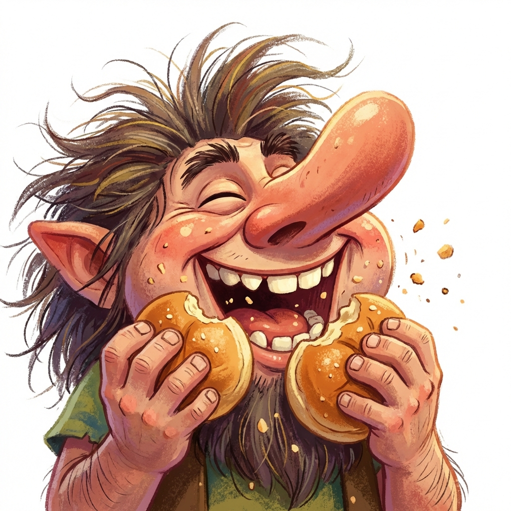
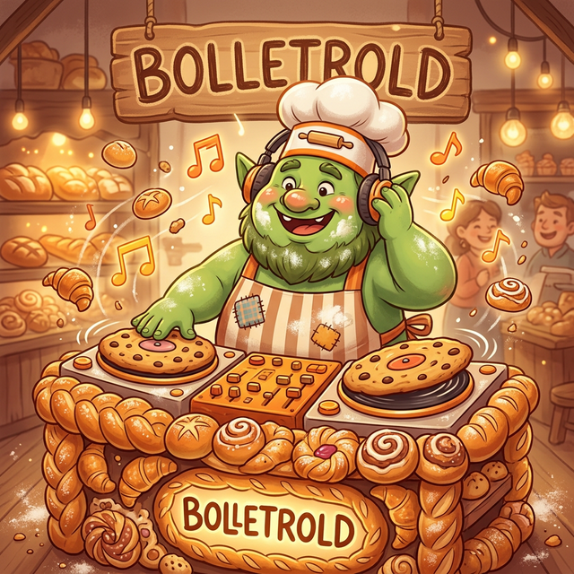

Kom indenfor, så skal jeg vise dig min kagerulle.
"Pas på du ikke får glasur i øjet."
Det er ikke kun dejen, der hæver herinde. ( ͡° ͜ʖ ͡°)

Kom indenfor, så skal jeg vise dig min kagerulle.
"Pas på du ikke får glasur i øjet."
Det er ikke kun dejen, der hæver herinde. ( ͡° ͜ʖ ͡°)
11. marts 2026

Efter måneders intensiv æltning i studiet kan vi endelig afsløre: Bolletroldene har udgivet deres første jingle! Sangen "Bagværkets Hjerte" er blevet produceret i et hemmeligt underjordisk bageri, hvor troldene har mixet dej og beats siden tidernes morgen.
"Vi ville lave noget, der virkelig hæver stemningen." — DJ Gæransen
🎧 Lyt til jinglen: